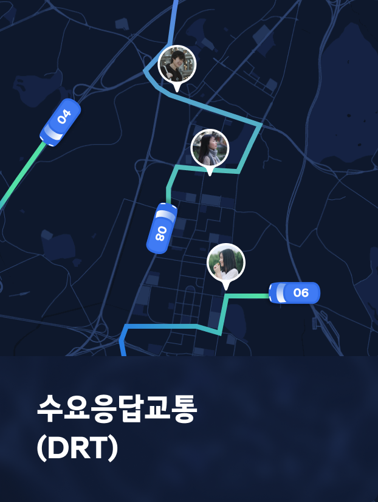
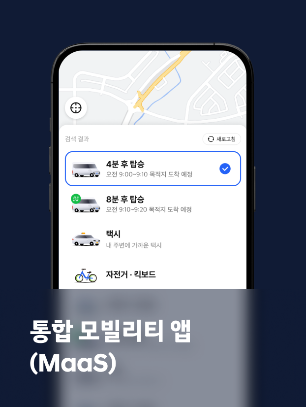
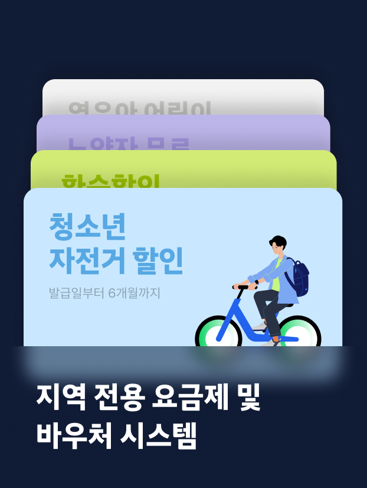
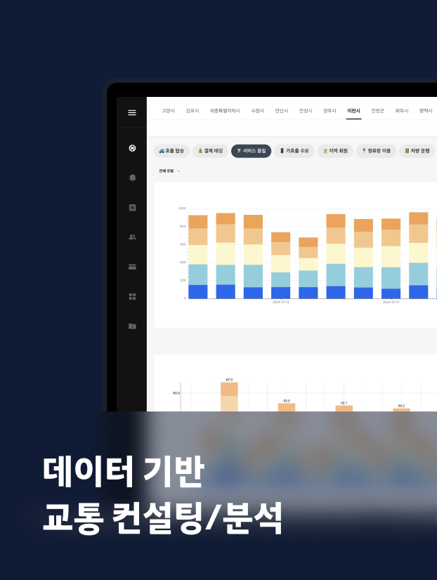
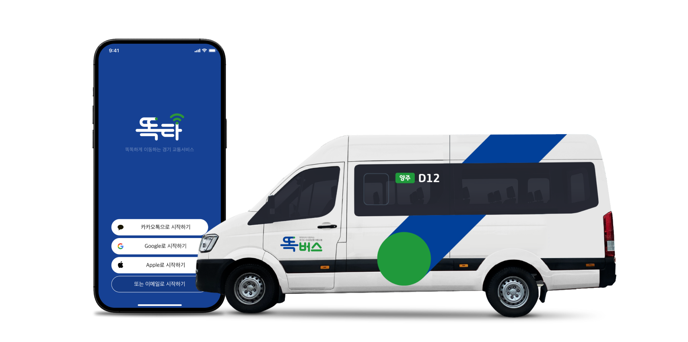
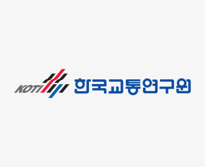

지속가능한 도시를 위한
통합모빌리티 플랫폼, 셔클
셔클은 현대자동차의 통합 모빌리티 플랫폼으로,
AI 기술을 활용한 다양한 모빌리티 솔루션을 제공하여 지역의 교통
문제를 해결하고
모든 사람이 제약없이 자유롭게 이동하는 도시를 만듭니다.
이동의 문제를 해결하는
독자적인 AI 기술
고도화된 데이터 분석 기술과 최적 경로 생성 알고리즘을 활용하여
실시간으로 이용자의 다양한 이동을 최적화하고, 효율적인 이동을 통해
공급자의
비용을 절감합니다.
-

-

-

-

지역의 일상을 바꾼
셔클 플랫폼 도입 사례
기술을 통해 대중교통의 사각지대를 해소하면서 교통의 효율을
향상시키는 지역 특성별 도입 사례를 소개합니다.

도시의 이동을 최적화하는
풍부한 데이터와 노하우
도심, 신도시, 농어촌 등 다양한 지역의 이동 데이터로 새로운
도입 지역의 수요를
예측하고 이동의 품질을 높이는 제안을 합니다.
-
누적 가입자
138만명+
-
누적 탑승객
1,505만명+
-
이용 호출
1,319만건+
-
운행 거리
5,766만km+
대중교통 체계를 개선하는
긴밀한 상생 파트너십
현대자동차-셔클은 민·관 협력형 운영 체계를 마련하여 지자체 및 지역
운수사와 상생하는
사례를 만들고 있으며 정부·학계와 함께 기존 대중교통 체계가 가진
문제를 해결하고 있습니다.
-
